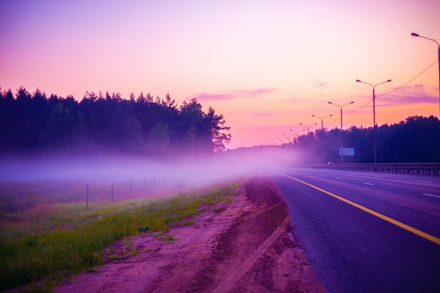

Фритрек и нулевой спринт: Подготовка к работе
Выбор

Это было самое начало пути. На этом этапе важно было проникнуться основами и настроиться на учёбу. И, возможно, подумать, как новые знания могут повлиять на ваше будущее.
Перед началом обучения я чувствовала страх неизвестности, неуверенность в своих силах и в будущей профессии. Профориентационный тест и подборка фритреков помогли сделать выбор в пользу Frontend-разработки. При прохождении нулевого спринта и знакомстве с группой поддержки появилось ещё больше интереса к профессии и желание получить новые знания.